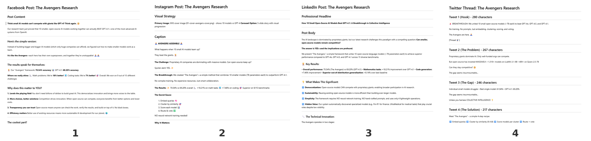
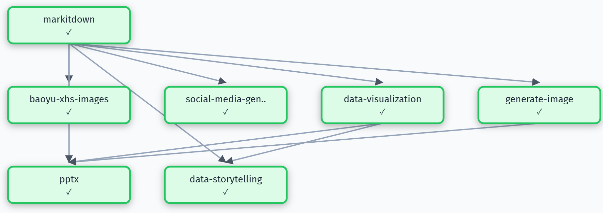

Paper Promotion
Transform academic papers into engaging multi-platform social media promotional materials
Task
As a PhD student, I've completed a research paper (Avengers.pdf) and want to promote it on social media platforms. Help me create promotional materials that effectively present my research findings to a broader audience.
Results

Xiaohongshu (RedNote) style visual slides designed for maximum engagement on Chinese social platforms. Features eye-catching graphics, simplified research highlights, key takeaways in bite-sized format, and visually appealing layouts optimized for mobile viewing. Each slide distills complex academic concepts into shareable, visually-driven content that resonates with general audiences.

Platform-optimized text content for different social media channels. Includes: Twitter/X thread with concise hook and key findings, LinkedIn post with professional tone highlighting industry implications, and general social media caption with hashtags. Each version is tailored to the platform's character limits, audience expectations, and engagement patterns.

Professional scientific presentation slide designed for academic and technical audiences. Features the paper's methodology diagram, key experimental results, performance metrics, and contribution highlights in a clean, conference-ready format. Suitable for use in research presentations, lab meetings, or academic social media (e.g., ResearchGate, academic Twitter).
Skill Workflow (DAG)

Skills automatically selected and orchestrated by AgentSkillOS